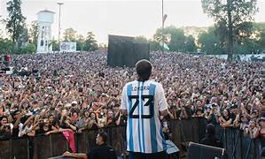

Paulo Londra es uno de los artistas más destacados del trap y rap latinoamericano. A lo largo de su carrera, ha compartido con sus seguidores momentos únicos a través de fotografías que reflejan su evolución artística y personal. Desde sus primeros pasos en el freestyle hasta sus presentaciones en grandes escenarios internacionales, cada imagen cuenta una historia que conecta con su audiencia.
